Manual de Radio Mundial
Tocas el mapamundi, eliges un país y una emisora, y suena. Esta guía explica la instalación y todo lo que puede hacer la radio.
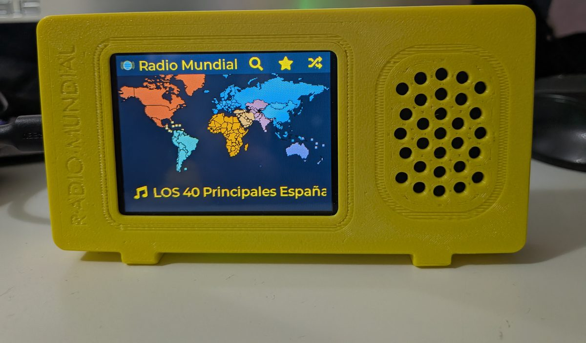
1. Qué necesitas
- Placa Freenove FNK0104: ESP32-S3 con pantalla táctil capacitiva de 2,8" y un pequeño altavoz incluido.
- Cable USB-C de datos. Algunos cables solo cargan y esos no sirven para instalar.
- Un ordenador con Chrome o Edge, solo para la instalación. Desde el móvil no se puede hacer este paso.
- WiFi de 2,4 GHz. La placa no puede usar redes de 5 GHz.
- Una carcasa impresa en 3D es opcional. Mira los archivos de la carcasa.
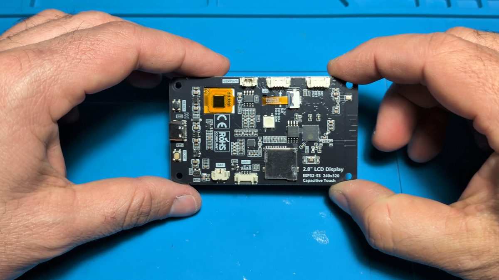
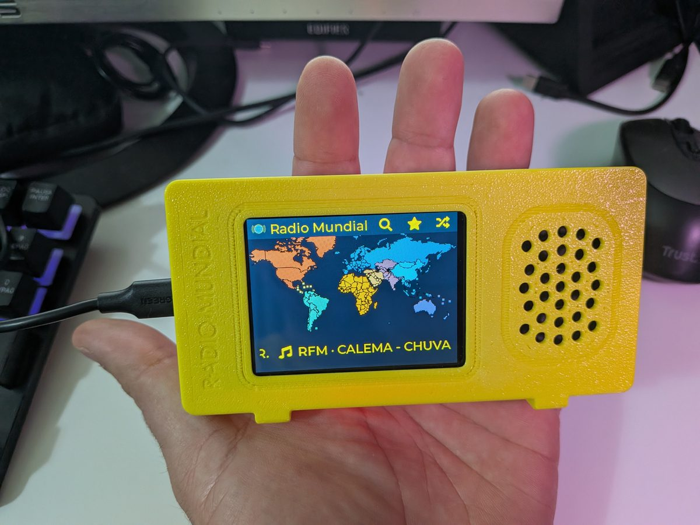
La radio funciona siempre enchufada por USB-C: no lleva batería. No hay que soldar, crear cuentas ni pagar nada.
2. Instalar
La instalación borra lo que hubiera en la placa y tarda 1 o 2 minutos.
- Conecta la placa al ordenador con el cable USB.
- Abre la página de instalación en Chrome o Edge:
Abrir la página de instalación - Pulsa Instalar Radio Mundial, elige el puerto de la placa en la ventana del navegador y confirma.
- Espera a que termine. No desenchufes la placa mientras se instala.
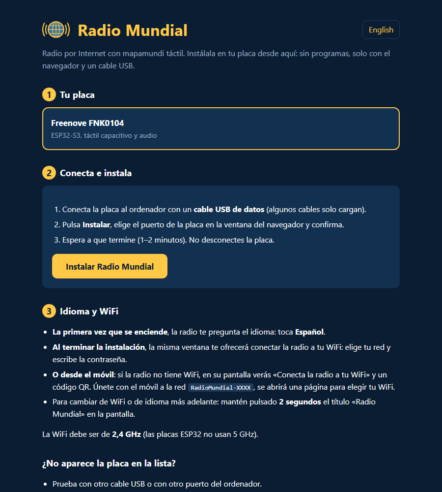
3. Primer arranque y WiFi
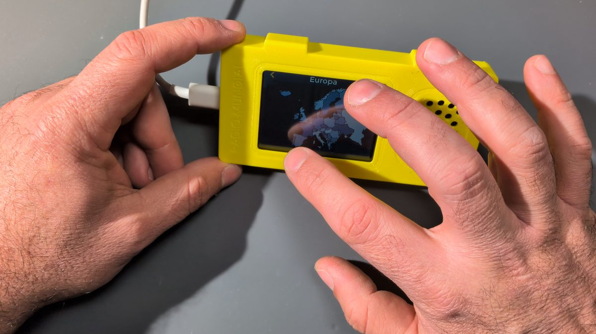
La primera vez que arranca, la radio pregunta el idioma.

Después conéctala a tu WiFi de una de estas dos formas:
- Desde el ordenador: al terminar la instalación, la misma ventana ofrece conectar la radio. Elige tu red y escribe la contraseña.
- Desde el móvil: si la radio no tiene WiFi, su pantalla muestra los pasos y un código QR. Escanéalo o únete a la red RadioMundial-XXXX, y se abrirá una página para elegir tu WiFi.
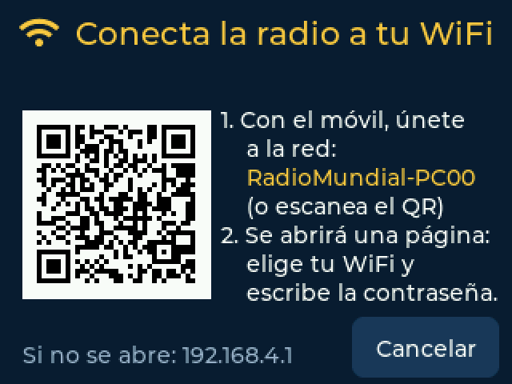
La radio recuerda la red. A partir de ahí, se conecta sola.
4. Buscar y poner emisoras
- Toca una región del mapamundi.
- Toca un país en el mapa de la región, o usa el botón de lista de arriba a la derecha para ver todos sus países.
- Toca una emisora y empezará a sonar.
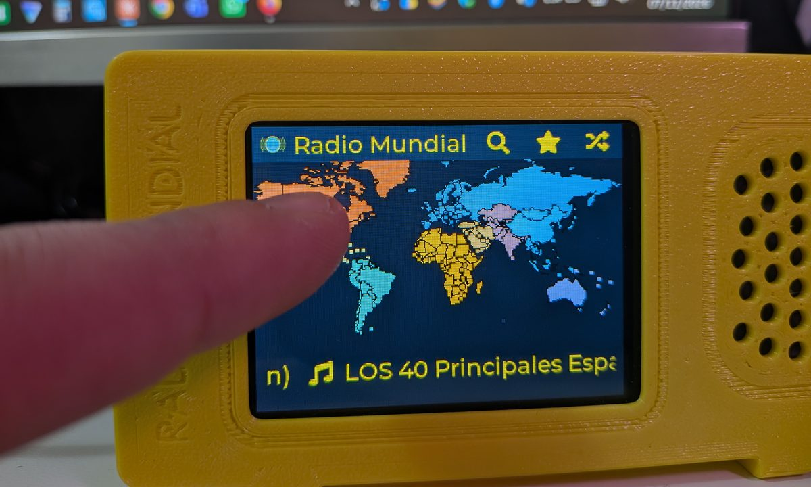
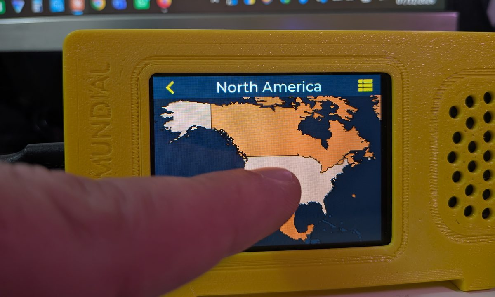
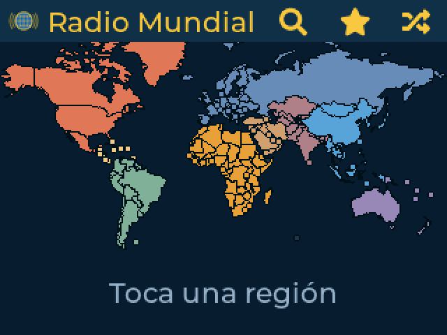
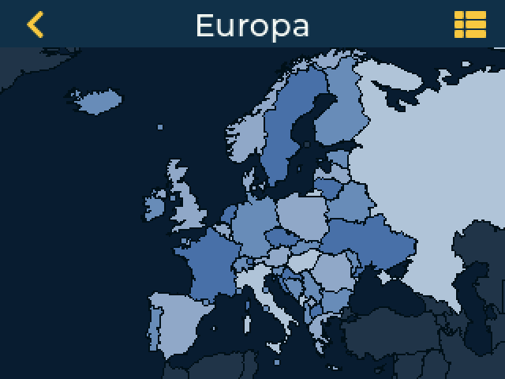
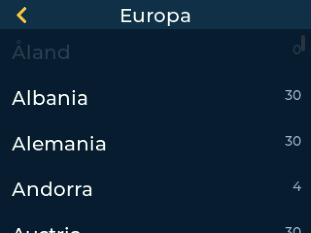
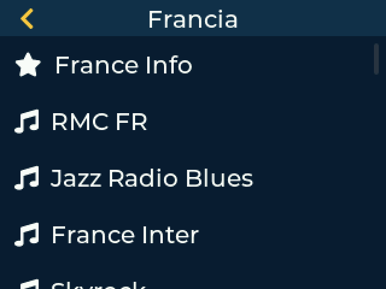
Los botones de arriba del mapa son buscador, favoritos y emisora aleatoria, que pone algo de cualquier parte del mundo.
Las emisoras que fallan dos veces seguidas bajan al final de la lista y se ven en gris. No se borran nunca, y vuelven a su sitio en cuanto suenan otra vez.
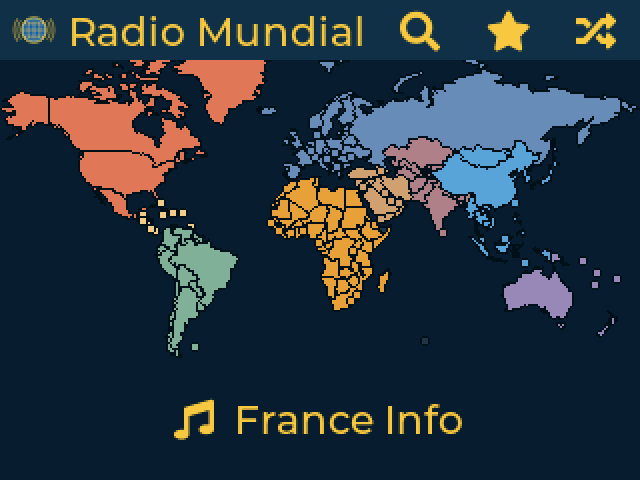
5. Mientras suena una emisora
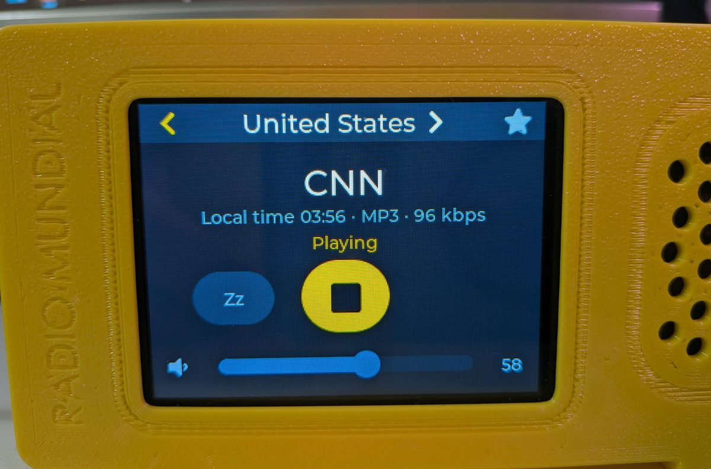
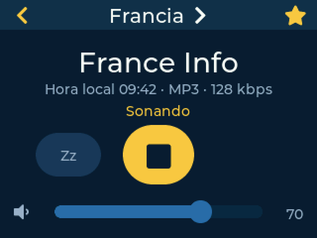
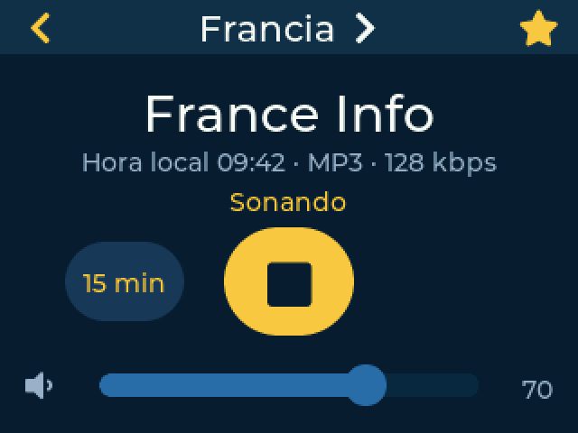
| Control | Qué hace |
|---|---|
| Nombre del país, arriba | Va a la lista de emisoras de ese país. |
| Estrella | Añade o quita la emisora de favoritos. |
| Botón grande | Para o pone la emisora. |
| Zz | Temporizador para dormir. Cada toque lo cambia: 15, 30, 60 o 90 minutos, y desactivado. En el último minuto baja el volumen y después la radio se apaga. |
| Barra | Volumen. |
También verás la hora local del país de la emisora y, si la emisora lo envía, el título de la canción. En países con varias zonas horarias, la hora es la de la capital o ciudad principal. Los títulos en árabe, chino, japonés o coreano no se muestran, porque la fuente de la pantalla no incluye esos alfabetos.
Al encender la radio, vuelve a sonar la última emisora.
6. Favoritos, recientes y buscador
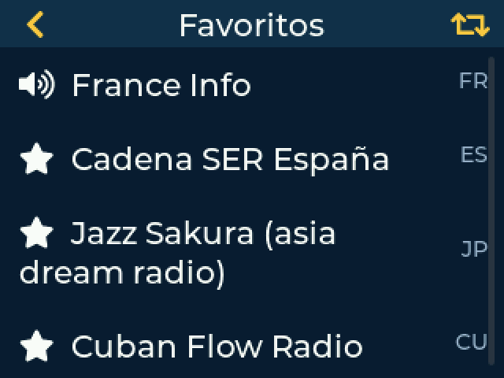
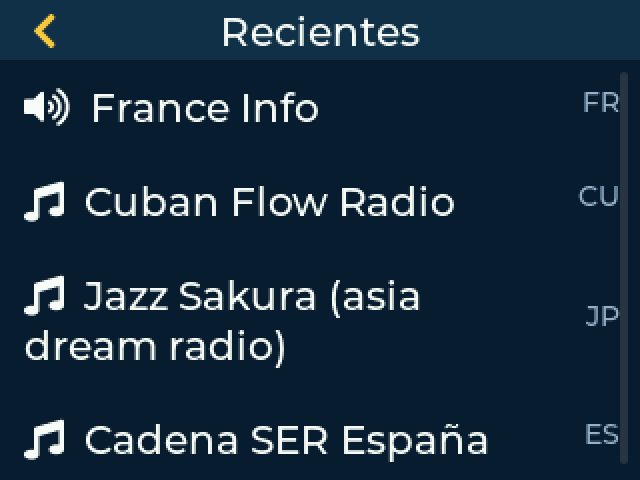
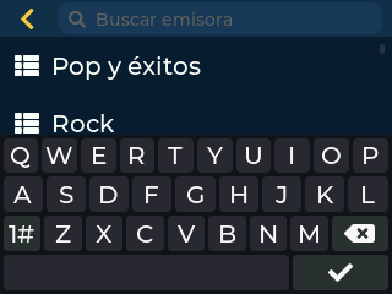
7. Ajustes
Mantén pulsado el título «Radio Mundial» del mapa durante 2 segundos.
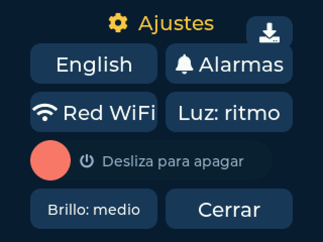
| Botón | Qué hace |
|---|---|
| Icono de descarga, arriba a la derecha | Actualiza las emisoras. |
| English / Español | Cambia el idioma. |
| Alarmas | Abre tus alarmas. |
| Red WiFi | Conecta la radio a otra red. |
| Luz | LED de la placa: ritmo (arcoíris que late con la música), fija (el color de la región de la emisora) o no. |
| Brillo | Intensidad del LED: bajo, medio o alto. |
| Desliza para apagar | Arrastra el botón rojo hacia la derecha. Toca la pantalla para volver a encenderla. Si hay una alarma programada, la radio despierta sola. |
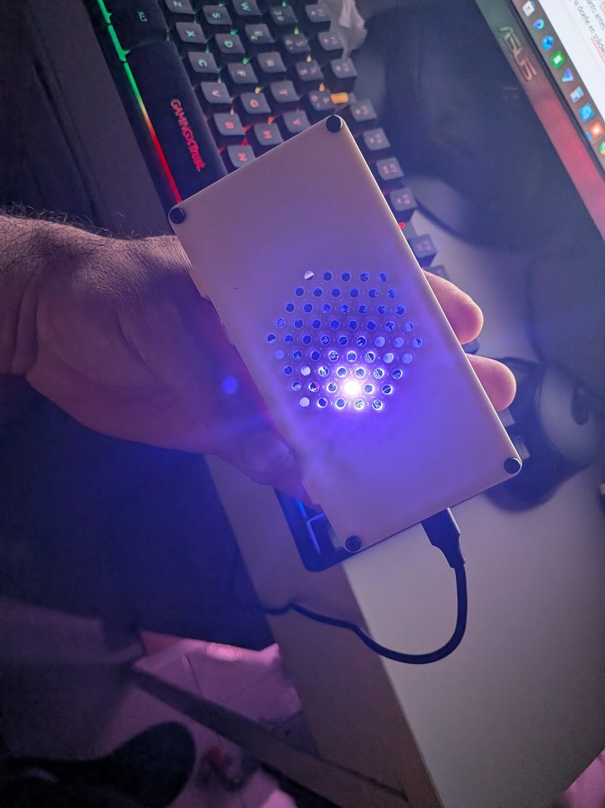
8. Alarmas
Puedes tener hasta 5. Ábrelas desde Ajustes y toca una para editarla, o toca Nueva alarma.
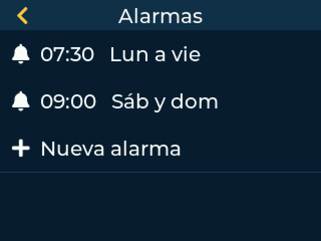
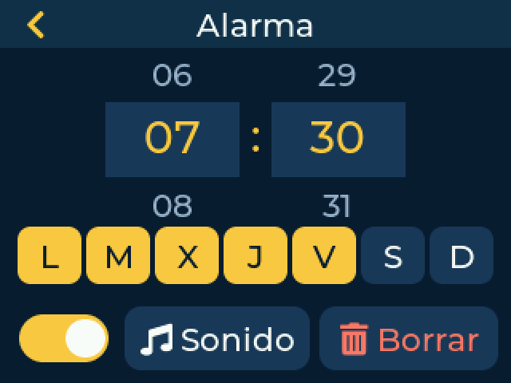
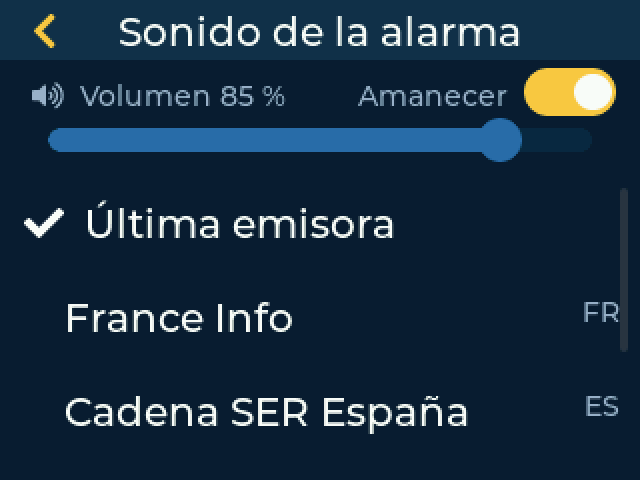
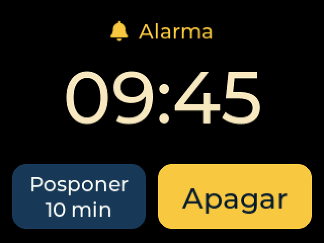
- El sonido empieza bajo y va subiendo. Si no la apagas, se para sola a los 30 minutos.
- Emisora: la última que escuchaste o una de tus favoritas. Si no responde o no hay Internet, la radio pone un tono propio.
- Amanecer: durante los 10 minutos anteriores a la alarma, el LED sube despacio de rojo a amarillo cálido, al máximo aunque tengas otro brillo elegido.
- Si ya estás escuchando una emisora, simplemente sigue sonando.
- La radio puede estar apagada con el deslizador y despierta para la alarma, pero tiene que seguir enchufada. Si la apagas mientras está pospuesta, esa repetición se cancela.
9. Actualizar las emisoras
Las emisoras cambian de dirección con el tiempo, así que la lista se puede renovar sin volver a instalar nada.
- Abre Ajustes y toca el icono de descarga de arriba a la derecha.
- Si hay una lista nueva, toca Actualizar. La música se para mientras se instala.
- Espera: la radio se reinicia sola al terminar.
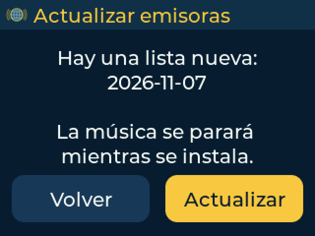
Procura no desenchufarla durante la actualización. Si se va la luz, no se rompe nada: la radio vuelve a su lista original y puedes actualizar otra vez. Tus favoritos, alarmas y WiFi no se tocan.
10. Pantalla de reposo
Tras 2 minutos sin tocar la radio, la pantalla baja el brillo y va alternando el reloj, el tiempo y la calidad del aire. Tócala para volver. La música sigue sonando.
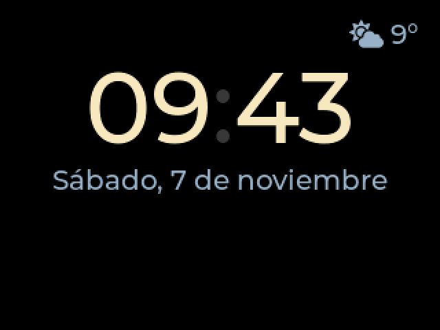
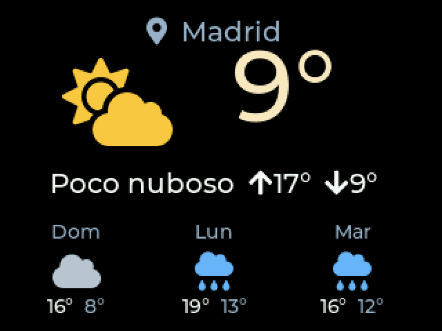
La radio calcula tu ubicación aproximada y tu zona horaria a partir de tu conexión a Internet, así que no hay que configurar nada. La ubicación puede fallar si usas una VPN.
11. Solución de problemas
| Problema | Qué probar |
|---|---|
| No aparece el botón de instalar | Usa Chrome o Edge en un ordenador, no en el móvil. |
| El puerto no sale en la lista | Usa un cable de datos y otro puerto USB, o mantén BOOT pulsado al conectarla. |
| No se conecta a la WiFi | Comprueba que la red es de 2,4 GHz. Revisa la contraseña en Ajustes → Red WiFi. |
| «No se pudo reproducir esta emisora» | La emisora puede estar caída. Prueba con otra. Si fallan muchas, revisa tu conexión a Internet. |
| Una emisora sale en gris | Ha fallado dos veces. Puedes tocarla igualmente: si suena, vuelve a su sitio. |
| No se oye | Revisa el volumen. Si la emisora aparece sonando pero no oyes nada, desenchufa la radio unos segundos y vuelve a enchufarla. |
| La hora o el tiempo no son correctos | Dependen de tu conexión a Internet. Una VPN puede cambiarlos. |
| Nada funciona | Vuelve a pasar por la página de instalación, o cuenta el problema en GitHub. |